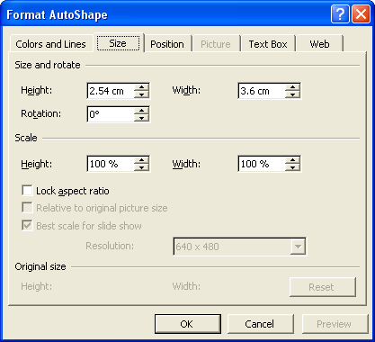

Free
powerpoint
Tutorials
|
Free
powerpoint
Tutorials
|
|
 home home |
Stay at Home and Learn | ||||
Create a Flow Chart in PowerPoint |
|||||
|
Flow Charts 1, 2, 3, 4, 5, 6, 7 Tables Charts
For slides five and six of your third presentation, you're going to design what's known as a flow chart. You've seen these before, no doubt. It's where you have a shape with a line or arrow leading to another shape. They are used to express ideas, logical chains, or organisational hierarchies. Here's the slide your going to be designing: This is a very simple Flow Chart and consists of three boxes and two arrows. If you run the presentation for this section again, watch what happens on slide 5. The first box appears and then, on a mouse click, the second box comes in from the left. After another mouse click, the third box arrives. The text at the bottom is not visible until the final mouse click. If you haven't quite grasped all that, don't worry - you'll see how it works as we build slide 5. So insert a new slide by clicking Insert > New Slide from the PowerPoint menu bar at the top. For PowerPoint 2000, select the Title Only slide, as in the image below: For PowerPoint 2003, the Title slide is near the top in the task pane, under Text Layouts. Click the arrow to insert a Title slide, as in this image: Enter the following for the Title: Call-Structure Discussion Meetings Set the Font to Arial, and the Font size to 36. Your slide will then
look like this: Not much to look at! But we'll fill that blank space with PowerPoint Objects. The first thing we'll do is add and format a rectangle. Make sure you can see the Drawing toolbar. It looks like this: If you can't see the Drawing tools, click View from the PowerPoint menu at the top. From the View menu, select Toolbars > Drawing. The tools we're going to be using are AutoShapes, and the line and arrow, in the image above. To add the rectangle, click on AutoShapes. A menu will appear. From the AutoShapes menu, select Flow Chart. Click the rectangle from the shapes that appear (the first one): Now move your mouse pointer onto the white slide. The pointer will change into a cross. Hold down your left mouse button. Keep it held down and drag out a rectangle. Don't worry about the size, as we can change that later. But you should have something like this on your slide (PowerPoint 2003 user will see white circles instead of squares): We'll change the colour and size in a moment. But first, we can add the text on top. Right click inside of your new rectangle, and you'll see the following context menu: Click on Add Text. Your rectangle will change and look like this: Notice the cursor flashing inside of the rectangle. Type the following text: Supervisor meets with Lower Manager The text will be far too big for the small rectangle, and will look something like this when you've finished typing: Select all the text with your mouse (or hold down the Shift key on your keyboard and use the left or right arrow keys). It should look like this, when you have selected all the text: Use the Font tools at the top of PowerPoint to change the Font size to 10, and the Font to Arial. Your rectangle will then look like this: Still too big, though! Move your cursor just before the "m" of "meets". Then hit the Enter key on your keyboard. Move your cursor just before the "L" of "Lower" and again hit the Enter key. Your rectangle will have all the text in it: The next thing we can do is to Format the rectangle a little. So right-click your rectangle. A menu will appear:
Select Format AutoShape from the context menu, and you'll see the following dialogue box: Change the Fill colour to yellow, then click the Size tab at the top:  Change the Height to 2.54 cm and the Width to 3.6 cm. Then click the Position tab: Change the Horizontal position to 1.9 cm and the Vertical to 8.00 cm. Then click OK. Your rectangle should now look like this:
Now that we have a rectangle done, we can add the arrow. We'll do that in the next lesson.
|
||||